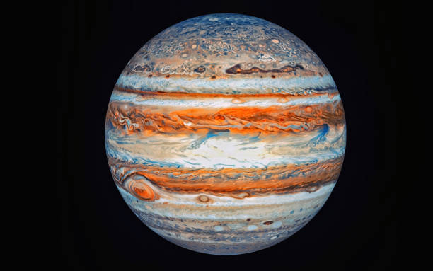

Imagens dos Planetas

Mercúrio planeta mais próximo do Sol e o menor do Sistema Solar.

Júpiter é o maior planeta do Sistema Solar e é famoso por sua Grande Mancha Vermelha, uma tempestade massiva.
A Terra é o terceiro planeta do Sistema Solar e o único conhecido a abrigar vida. Possui uma atmosfera rica em oxigênio e nitrogênio, que protege a superfície de radiações solares e ajuda a manter temperaturas adequadas para os seres vivos.